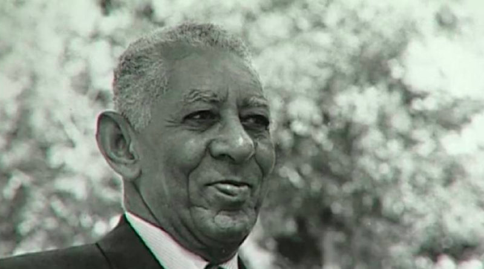
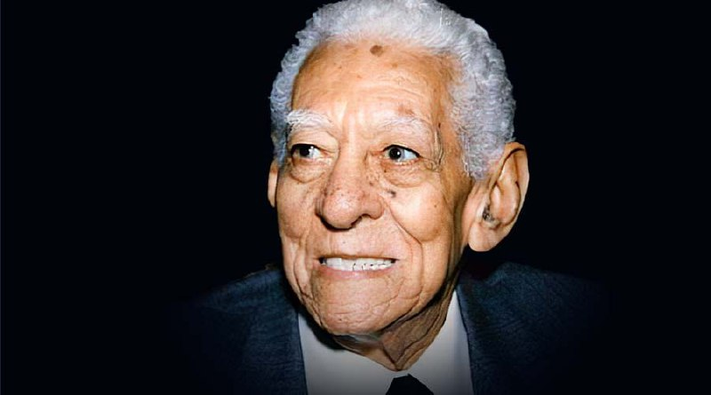
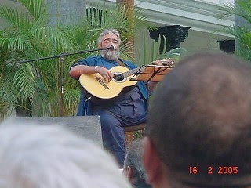
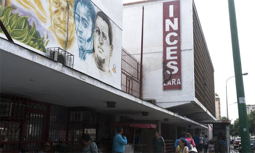

Historia del INCES |
Historia del INCES |
El 22 de agosto de 1959 es una fecha singular en la vida del pueblo venezolanos cuando el Ejecutivo Nacional creó el Instituto Nacional de Cooperación Educativa , INCES, por iniciativa del “Maestro de América” Luis Beltrán Prieto Figueroa, genio y figura de su creación.
 Jesús Gordo Páez Nació el 20 de junio de 1952 en Caracas. Se hizo cantautor en 1968 cuando estudiaba veterinaria en la Universidad Centro Occidental Lisandro Alvarado, cuando en los juegos deportivo universitarios, declama varios de sus poemas acompañado de la guitarra, con Alí Primera. Desde esa época mantiene un estilo particular caracterizado por la denuncia, la protesta y la revolucionaria.
El INCE fue fundado por Ley el 22 de agosto de 1959, por por iniciativa del maestro Luis Beltrán Prieto Figueroa en el año 2003 se reforma el reglamento de la Ley del INCE, con la finalidad de reorganizarlo y adecuarlo a los intereses del país y al proceso de reconversión industrial, proceso que enmarca posteriormente su concepción y visión dentro del ámbito
El Inces es la institución del Estado encargada de la formación integral, continua y permanente de los trabajadores y las trabajadoras, orientada al desarrollo de sus capacidades para la producción de bienes y prestación de servicios que satisfagan las necesidades del Poder Popular, su incorporación consciente al proceso social de trabajo y la construcción de relaciones laborales justas e igualitarias.
Convertirnos en una poderosa herramienta para la transformación economía soberana y diversificada, siendo referente nacional e internacional de la formación técnica profesional inclusiva y colectiva, con altos niveles de calidad, que forma trabajadores y trabajadoras conscientes de su rol como sujeto social protagónico, con dominio de los procesos productivos y capacidad para generar tecnología e innovación creadora.